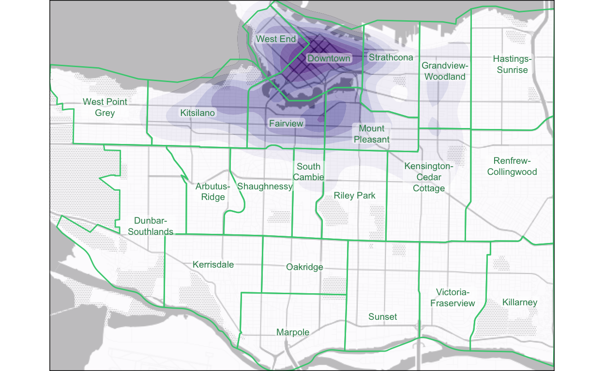
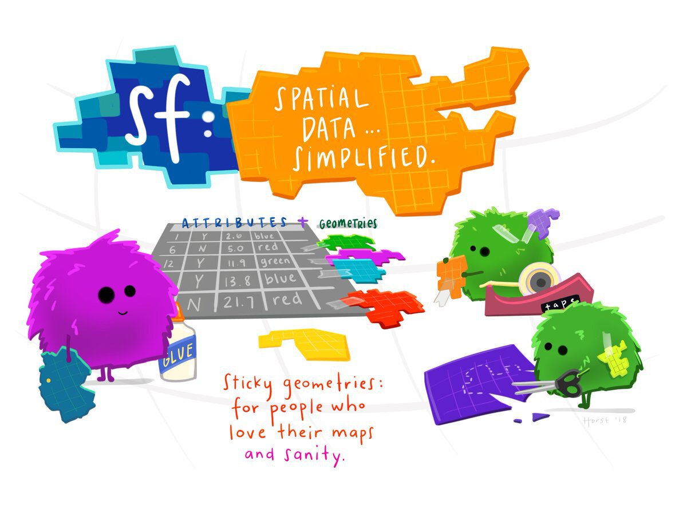
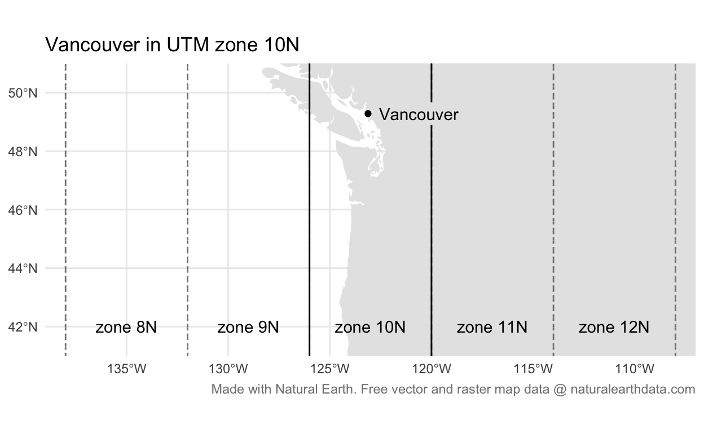
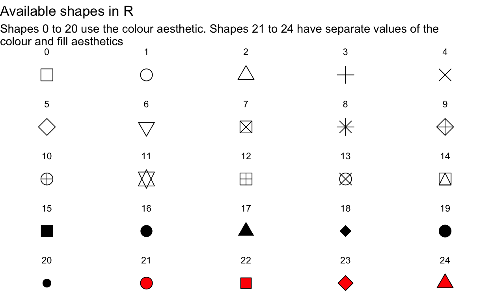
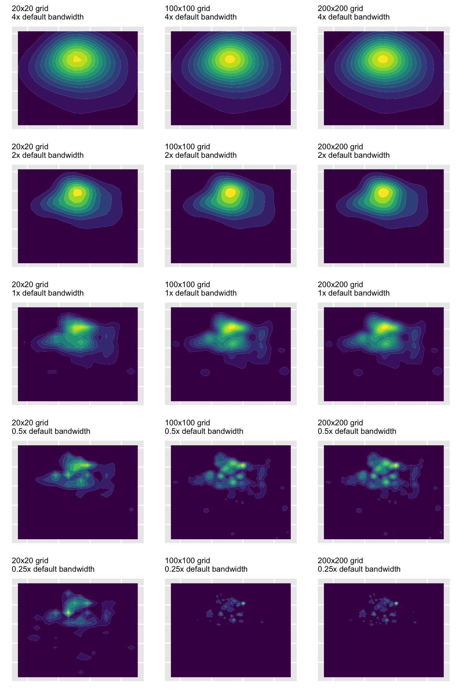
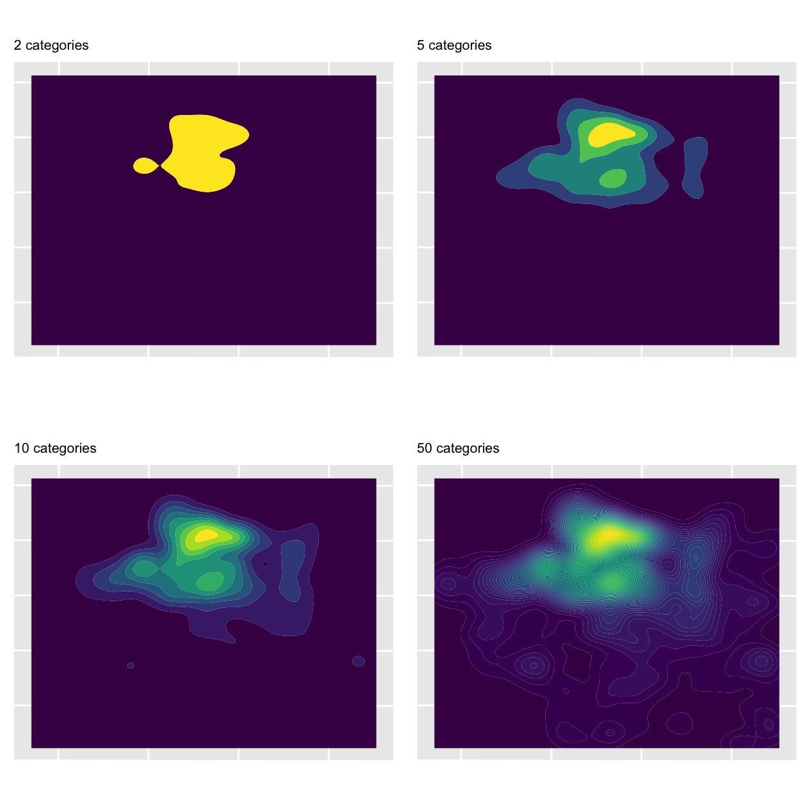
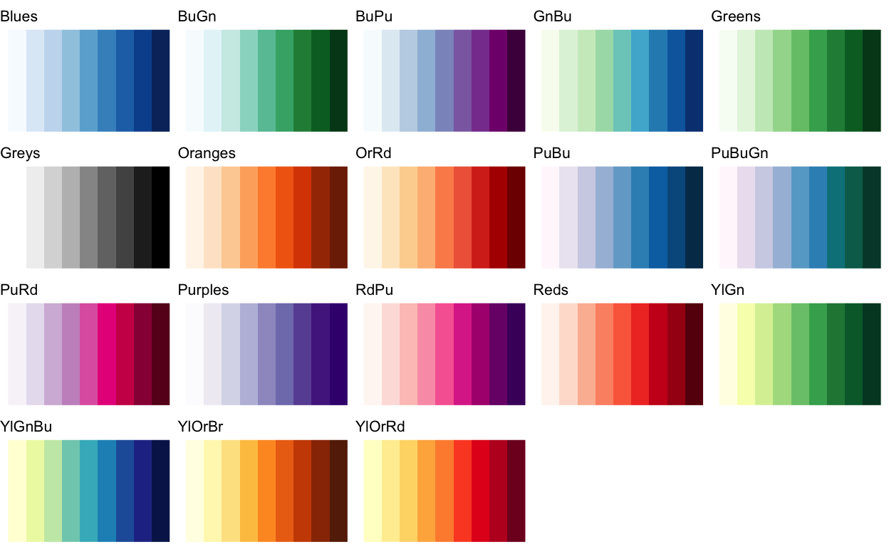
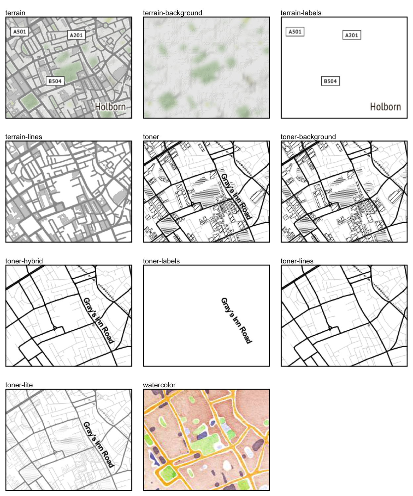

Introduction
We’ve already produced a simple map of crime in a neighbourhood, but we skipped over a lot of the details of how to do it. In this tutorial we will make another crime map, this time focusing more on each step in the process.
In this tutorial we will make a map of bicycle thefts in Vancouver in 2020. At the end of this tutorial, the final map will look something like this. We will then improve it further in the next tutorial on what makes a good map.

Handling spatial data
Maps are visual representations of spatial data. Spatial data is special because each row in the data is associated with some geographic feature such as a building, a street or a county. This adds some quirks that we have to understand to work with spatial data successfully.
Vectors and rasters
Spatial data can be represented in two general formats: vectors and rasters. Watch this video from the UK mapping agency Ordnance Survey to find out more about the advantages and disadvantages of using each type of data.
As you saw in the video, in general vector data gives you more control over the appearance of a map, but at the cost of your having to put together each part of the data yourself, choose the styles etc. In contrast, raster data (such as the base map of Atlanta we used in the first map we made for this course) gives you less control but allows you to add pre-formatted data to your map quickly.
Spatial layers
Maps are made up of multiple layers of spatial data that are styled to represent features of interest and then stacked on top of one another to make the finished map. Watch this video to learn more about spatial layers and the three different types of vector data that we can use in maps.
Points, lines and polygons in spatial data are known as geometric objects or simply geometries. Spatial data is data that has a geometric object associated with each row.
Representing places on the earth
Since maps are two-dimensional representations of the curved surface of the earth, map-makers must make choices about how to translate that curved surface onto a flat screen or piece of paper. This video introduces these choices, and explains why they are relevant to crime mapping.
With any spatial data, we need a way of describing where on the earth a particular point (such as the location of a crime or the corner of a building) is located. Watch this video to find out about the different co-ordinate systems we can use to do this.
Spatial data in R

There are two different R packages that implement the concepts needed to handle spatial data. There are several packages that handle raster data from different sources – one of them is the ggmap package that we already used to load the base map of Atlanta for the homicide map we made in one of the earlier tutorials.

Vector data can be handled in R using functions from the sf package. SF stands for ‘simple features’, which is a standard for storing spatial data. SF objects are data frames that have a special column to hold the geometry (point, line or polygon) associated with each row in the data. SF objects also understand what co-ordinate system the geometry are described in. This means SF objects can be transformed between co-ordinate systems and combined together in layers on a map.
There a lots of functions in the sf package for handling spatial data. Almost all of these functions begin with the letters st_ (e.g. st_read()), which makes it easy to identify that those functions are designed to be used on SF objects.
Reading spatial data
The special features of spatial data – needing to store geometries, details of the projection used etc. – mean that spatial data is often stored in special file formats. There are lots of spatial-data formats, but fortunately almost all of them can be read by the st_read() function. This means we do not need to learn a different function for each spatial-data format.
While datasets with line or polygon geometries must almost always be stored in specific spatial-data formats, point data can also be stored in common data formats such as Excel and CSV files. The data for this tutorial is provided by the Vancouver Police Department in a CSV file (gzipped to reduce the file size). The file is located at:
https://github.com/mpjashby/crimemapping/raw/main/inst/extdata/vancouver_thefts.csv.gzThinking back to the tutorial on data wrangling, what R code is needed to load this data into a tibble called thefts? Type the R code into the box below and click Run Code to see the result. If you need help, click the Solution button, but try to remember the code (or look up your notes from the data-wrangling tutorial) before revealing the solution – you’ll learn a lot more that way. Remember to load any necessary packages using the library() function!
# Since the data are stored in a regular CSV file, we can use the `read_csv()`
# function from the readr package to read the file, and the assignment operator
# `<-` to store the data in the object `thefts`. `read_csv()` can read directly
# from a URL, so there is no need to download the data first.
library(tidyverse)
thefts <- read_csv("https://github.com/mpjashby/crimemapping/raw/main/inst/extdata/vancouver_thefts.csv.gz")Now that you have stored the data in the thefts object, what code is needed to view the first few rows of data? Type the code into the box and click Run Code to check the result.
# To view the contents of an object in R, just type the name of the object. If
# the object is a tibble (which we know is the type of object returned by
# `read_csv()`) then only the first few rows will be printed.
theftsThe data consists of 16,827 rows, each representing one theft. Before we can map this data, we will need to do some minor data wrangling to get it into the format we want.

In the earlier tutorial about naming files, I recommended using file names that were lower case, used only letters, numbers, hyphens and underscores, and used underscores to separate words. These recommendations also apply to choosing object names and the names of columns in data frames. Doing this makes it much easier to refer to objects and columns in your code, without having to worry about whether a particular letter was upper- or lower-case, or whether it had an accent etc. This style of naming objects is called snake case, since it makes object names look a bit like a snake.
At the moment, the column names are upper-case letters. Rather than having to remember this, we can easily convert them to snake case using the clean_names() function from the janitor package. To use a function from a package, we usually first load the package using the library() function. In this case, we probably won’t want to use any other functions from the janitor package, so instead of loading the whole package we will use this one function directly. To do this, we write the function name with the package name added to the front, separated by ::.
thefts <- janitor::clean_names(thefts)
theftsIf we wanted to use the clean_names() function again, we would have to include the package name and :: each time, so if our code was going to make repeated use of the function then it would probably be easier to load the package as we have done in previous tutorials.
Converting our data to an SF object
At present, the data in the thefts object is just a regular tibble. We could not use it to make a map because R does not know which columns represent the geometry, or what co-ordinate system the locations are recorded in. We can deal with this by converting the data to an SF object using the st_as_sf() function from the sf package.
The data provided by the Vancouver Police use the UTM zone 10N co-ordinate system. UTM is a system for assigning co-ordinates to any location on earth relative to a local origin point for the UTM zone covering that part of the planet. It is therefore similar to the British National Grid that we have already learned about, but for any part of the globe. The ‘N’ at the end of the zone name refers to the northern hemisphere.

We can convert the thefts tibble to an SF object using the st_as_sf() function (remember, all functions in the sf package start with st_, which can sometimes make the function names a little confusing). We specify which columns in the data represent the geometry (in this case, the x and y columns), and what co-ordinate system the data uses.
Co-ordinate systems can be specified in lots of ways (some very complicated), but the easiest is to specify the EPSG code for the relevant system. An EPSG code is a unique reference number for a particular co-ordinate system that R can look up in a database to get the information needed to display the data on a map. The EPSG code for the UTM zone 10N is 32610.
library(sf)
thefts_sf <- st_as_sf(thefts, coords = c("x", "y"), crs = 32610, remove = FALSE)
thefts_sfIf you look at the contents of the thefts_sf object, you’ll see that there is a new column called geometry (you may need to use the ▸ button to see it). We need to specify remove = FALSE because by-default the st_as_sf() function removes the data columns containing map co-ordinates once it has converted them into a geometric object stored in the geometry column. This is useful for making very-large datasets smaller (by removing redundant columns), but in this case we will need the x and y columns later, so we want to keep them in the dataset.
Finding bike thefts in our data
If you look through the contents of the thefts_sf object, you will see that not all of the rows relate to bicycle thefts. The type column shows that the dataset also includes thefts from vehicles, for example. To choose only those rows containing bicycle thefts, which function from the dplyr package would we used? If you need help, you can think back to the data-wrangling tutorial or have a look at the Data transformation with dplyr cheat sheet.
Type the code needed to choose only the rows of data that relate to bicycle thefts and store it in a new object called bike_thefts. Click the Run Code button to see the results of your code. If you get stuck, you can click the Hint buttons to get help, but try to find the answer on your own first!
# Use the `filter()` function to choose particular rows in a dataset. The syntax
# for `filter()` is `filter(dataset, column_name == "value")`# In the code `filter(dataset, column_name == "value")`, replace `dataset` with
# the name of the SF object you have already created from the `thefts` tibble,
# `column_name` with the name of the column containing the offence type and
# `value` with the offence type for bicycle theft.# The correct code to store only bicycle thefts in a new object is:
bike_thefts <- filter(thefts_sf, type == "Theft of Bicycle")Our data is now ready for us to make our crime map!
Stats Illustrations by Allison Horst licensed under the Creative Commons Attribution licence.
Producing maps in R
Now that we have our data, we can use it to create a map of bicycle theft in Vancouver. Before we start, let’s take another look at our dataset so that we know which columns contain which data. Type the code needed to view the first few rows of the bike_thefts dataset and click Run Code.
# To view the contents of an object in R, just type the name of the object. If
# the object is an SF object derived from a tibble (which is the case for our
# data) then only the first few rows will be printed.
bike_theftsIntroduction to ggplot2

A map is a specialised type of chart, so we can make maps using the ggplot2 package that is widely used to create other types of chart in R. ggplot2 charts are made up of layers, so they’re well suited to making maps.
The most-basic map that we can make simply plots the locations of crimes with no context. This almost never makes a good crime map, but we can use this type of map as the foundation around which we can build a better map.
ggplot2 plots work by building up a chart using different functions, each of which adds or modifies some part of the chart. Building a plot starts with calling the ggplot() function, with each subsequent function being added to the plot definition using the + operator. Note that while the package is called ggplot2, the function in that package used to create plots is called ggplot(), not ggplot2().
The most-important of the ggplot2 functions are those beginning with geom_, which add graphical elements to the chart. If you want to add a layer to your chart showing a scatter plot, you use the geom_point() function, while if you want to make a line chart you use geom_line().

There are lots of geom_ functions available for representing data on charts in different ways. For maps, the SF package includes the geom_sf() function that is designed to add spatial data (in the form of an SF object such as our bike_thefts data) to a chart, making it into a map. So to simply plot the points in our bicycle-theft data, we can use the code:
library(ggplot2)
ggplot() +
geom_sf(data = bike_thefts)By convention, each function that we add to ggplot() to change the appearance of our map goes on a new line (this makes the code easier to read) and all but the first line is indented by two spaces. RStudio does this indenting automatically if the previous line ends with a + symbol, since RStudio then understands that there is more code to come on the next line.
Controlling aesthetics
We can change the appearance of the points by specifying various arguments to the geom_sf() function. These arguments are called aesthetics, because they control the aesthetic appearance of the geometric objects (points, lines etc) produced by a geom_ function. There are lots of aesthetics, but some of the most common are:
colourcontrols the colour of points and lines (for polygons, it controls the colour of the border around the polygon edge) – you can also use the spellingcolorfor this argument and get an identical result,fillcontrols the colour used to fill polygons or points that use a shape capable of having different colours in the centre and around the edge (fillhas no meaning for lines),shapecontrols the shape (circle, triangle, square etc.) of points (it has no meaning for points or polygons),sizecontrols the size of points and the thickness of lines (for polygons, it controls the thickness of the border around the polygon edge), as well as the size of text, andalphacontrols the transparency of a layer (alpha = 1equals fully opaque,alpha = 0means fully transparent).
colour and fill can be specified using any one of 657 R colour names or using a hexidecimal (‘hex’) colour code. Values of size don’t relate to any unit of size (e.g. millimetres or points), so it’s easiest to set the size of points and text by trial and error.
There are 25 built-in shapes for points in R (shape 16 is the default):

Change the code below so that the points on our map are red squares instead of black circles (red is one of the 657 R colour names) and click Run Code to see the result. Use the hints if you need help, but try to work it out on your own first.
ggplot() +
geom_sf(data = bike_thefts)# Use the `shape` aesthetic to change the points to squares and the `colour`
# aesthetic to change the point colour to red# Add the arguments `shape = 15` and `colour = "red"` to the `geom_sf()`
# function, remembering that arguments are separated by commasggplot() +
geom_sf(data = bike_thefts, shape = 15, colour = "red")This basic map is accurate, but not very useful. We can see that there seems to be a cluster of bike thefts towards the top (north) of the map, but it is difficult to see how important this cluster is because so many of the points overlap. Overlapping points are a particular problem in maps, because if there are multiple crimes at the same location then the points representing those crimes will be exactly on top of one another and it will be impossible to see whether there is one crime at a particular location or 100.
One way to deal with this problem is to make the points semi-transparent so that overlapping points appear darker. This often also needs us to make the points slightly smaller at the same time. Use the alpha and size aesthetics to make the points smaller (relative to the default of size = 1) and semi-transparent. Keep changing the values of the two aesthetics until you are happy that the map makes it as easy as possible to see the distribution of bike thefts in Vancouver.
ggplot() +
geom_sf(data = bike_thefts)ggplot() +
geom_sf(data = bike_thefts, size = 0.75, alpha = 0.1)Making the points semi-transparent goes some way to making it easier to see where bike theft is most common in Vancouver, but the pattern is not clear and if it is not possible to tell which darker points represent a handful of crimes at the same location and which represent hundreds of crimes at the same location. To make our map useful, we need to use a different technique.
Mapping crime density
Unless we want to produce a map of only a very small number of crimes (like the Atlanta downtown homicides map we produced in a previous tutorial), it is unlikely that a point map will be very useful. In fact, if you find yourself making map with each crime represented by a separate point, you should probably stop and ask yourself if that is really the best way to achieve your goal.
A better way to show where crime is concentrated on a map is to work out the density of crime in each area and then map that density. Fortunately, the ggplot package has a geom_ function that does this for us automatically: geom_density_2d_filled().
geom_density_2d_filled() is a function from the ggplot2 package, not the sf package, so it doesn’t understand SF objects. Fortunately, when we created the bike_thefts dataset we chose to keep the x and y co-ordinates of each crime in separate columns, which is what geom_density_2d_filled() needs to estimate the density of crimes across the surface of our map.
Since our data contain several columns, we need to specify which columns contain the x and y co-ordinates of each bike theft. To do this, we use the aes() function from ggplot2. We have already seen that we can set aesthetics such as colour and shape manually, but aes() allows us to specify columns in the data that should be represented using different aesthetics. So just as the colour aesthetic specifies what colour a point or line should be, the x and y aesthetics specify where on the horizontal and vertical axes data should be represented.
In the bike_thefts data, the co-ordinates of the theft locations are contained in the x and y columns, so to tell geom_density_2d_filled() to use the data in these columns we just have to add aes(x = x, y = y) to our code.
The geom_sf() function that we used in our point map automatically extracted from the bike_thefts SF object the information needed to understand the co-ordinate system used when the data were first created by the Vancouver Police. The geom_density_2d_filled() function cannot do this because it does not understand SF objects, so instead we will provide this information manually by adding a call to the function coord_sf(). remember that 32610 is the EPSG code for the UTM zone 10N co-ordinate system.
ggplot() +
geom_density_2d_filled(aes(x = x, y = y), data = bike_thefts) +
coord_sf(crs = 32610)Now, instead of seeing each crime as a separate point, we see the density of crime as filled contours. By comparing this density map to the point map we produced before, we can see that the density map makes the areas with the highest frequency of thefts much easier to identify.
You can also see that our map now has a legend, showing that higher densities of bike thefts are shown on the map in yellow and lower densities are shown in blue. The exact values shown in the legend are not particularly meaningful, so we can ignore these for now.
Fine-tuning density maps
The geom_density_2d_filled() function uses a technique called kernel density estimation (KDE) to estimate the density of points in each part of a map. To does this, the function must:
- divide the map into a grid of cells, each the same size,
- count the number of points in each cell,
- for each cell, count the number of points in nearby cells, but give less weight to (i.e. systematically undercount) those cells that are further away,
- for each cell, total up the count of points in that cell and the (weighted) count of points in nearby cells – this is the estimate of the density of points in that cell.
This procedure has the effect of producing a smooth surface representing crime density. We can control the appearance of the density surface on our map by varying the number of cells in the grid and the definition of what cells the kernel density estimation process should consider to be ‘nearby’ for the purposes of calculating weighted counts. Cells are considered to be ‘nearby’ to a particular cell if they are closer to that cell than a distance known as the KDE bandwidth.
By default, geom_density_2d_filled() uses a 100-cell by 100-cell grid, and the optimal bandwidth is calculated automatically. The maps below show how changing these defaults changes the appearance of our map (with the legend and axes removed to make the small maps clearer).

By looking at the maps in the top two rows, you can see that reducing the number of grid cells below the default of 100 leads to a map that looks blocky, but that increasing the number of grid cells above 100 doesn’t make much different (it might do if we needed to make a very large map).
Looking at the middle column of maps, you can see that increasing the bandwidth relative to the default makes the density surface smoother. The smoother the surface, the less detail we can see about where crime is most concentrated, until on the top row we can see almost no information at all. On the other hand, if we reduce the bandwidth too much (the bottom row of maps) then almost no ‘nearby’ cells are included in the count and so it becomes more difficult to identify patterns.
In most cases, you will not need to change the number of grid cells used in calculating the density of points on a map, but if you do then you can do this using the n argument to geom_density_2d_filled() (e.g. n = 200).
Although you can set the bandwidth manually using the h argument to geom_density_2d_filled(), you will almost never want to do this. Instead, you can vary the bandwidth relative to the automatically chosen default bandwidth by using the adjust argument to geom_density_2d_filled(). For example, if you wanted to see more detail in your map by using a smaller bandwidth, you could use adjust = 0.5 or adjust = 1/2 to set the bandwidth to be one-half of the default bandwidth.
Change the code below so that the bandwidth is two thirds of the default bandwidth and click Run Code to see the result.
ggplot() +
geom_density_2d_filled(aes(x = x, y = y), data = bike_thefts) +
coord_sf(crs = 32610)# you can set either `adjust = 2/3` or `adjust = 0.67` to get the same result
ggplot() +
geom_density_2d_filled(aes(x = x, y = y), data = bike_thefts, adjust = 2/3) +
coord_sf(crs = 32610)We can also fine-tune our density map by choosing the number of different categories used to represent different densities on the map. If we use too few categories (such as the map below that uses only two) then areas with very different densities will be represented on the map as if they are the same. If we use more categories, eventually the map becomes more cluttered and then (as in the map below with 50 categories) the map starts to have a blurry appearance. The default number of categories is approximately 10, but if we want to change the number of categories then we can use the bins argument to geom_density_2d_filled(), e.g. bins = 20.

The final way we can control the appearance of our density layer is to change the colour scheme used to represent density. To do this, we can use another type of ggplot2 function: scales. There are lots of scales available, but the scale_fill_brewer() function produces several different colour scales that are specifically designed to be effective on maps.
All the available colour schemes are on the Color Brewer website. Colour schemes can be divided into three types:
- sequential colour schemes are useful for showing values from low to high,
- diverging colour schemes are useful for showing values relative to a meaningful central point, and
- qualitative colour schemes are useful for showing separate categories that can appear in any order and still be meaningful.
In crime mapping we’re usually interested in showing how crime varies from low to high, so we need to use a sequential colour palette. There are 18 sequential colour schemes (or palettes) available in scales_fill_brewer(), each with a name:

You can think of all the functions that we can add to ggplot() as being like a stack of pancakes, with each new function being placed on the top of the stack. To change the colour of our map, we just add scale_fill_brewer() to the existing stack. At the same time, we will use bins = 9 to specify that our map should show nine categories of density, since Color Brewer palettes only have nine values.
ggplot() +
geom_density_2d_filled(aes(x = x, y = y), data = bike_thefts, bins = 9) +
scale_fill_brewer(palette = "Oranges") +
coord_sf(crs = 32610)Adding a base map
You now have the skills to make a density map of bike theft in Vancouver. Using your notes and the code in the previous section, complete the code needed to generate a map with:
- kernel density calculated using the default number of grid cells and half the default band width, and
- the density shown using nine categories and the Color Brewer ‘Purples’ colour scheme.
ggplot() +ggplot() +
geom_density_2d_filled(aes(x = x, y = y), data = bike_thefts, adjust = 1/2, bins = 9) +
scale_fill_brewer(palette = "Purples") +
coord_sf(crs = 32610)This map is much more effective than a point map at allowing us to identify where the highest number of bike thefts in Vancouver occur. However, it’s still quite difficult to know where those places are, because we cannot easily work out where in the city these places are. We can make this much easier by adding a base map underneath the density layer.
We can add a base map using the ggmap package. To do this, we:
- Transform the co-ordinate system used in our data to the World Geodetic System (often known as WGS84), which is what functions from the
ggmappackage work with. - Extract the transformed co-ordinates using
st_coordinates(), sincegeom_density_2d_filled()cannot do this automatically. - Find the bounding box of our spatial data, which is the co-ordinates of the smallest possible box that would cover all our data points. We do this using the
st_bbox()function from thesfpackage. - Download a base map for that area using the
get_stamenmap()function from theggmappackage. - Create a map showing that base map layer using the
ggmap()function. - Add the density layer to that map.
Using the %>% (pipe) operator from the magrittr package, we can do all of this in one piece of code. I have used comments (lines beginning with #) to annotate the code so that it’s easier to read (even though this makes the code quite a bit longer). Don’t worry if it takes you a few minutes to work through it all!
# transform the data into the co-ordinate system used by the functions in the
# ggmap package
bike_thefts <- st_transform(bike_thefts, 4326)
# extract the co-ordinates from the transformed data, since
# geom_density_2d_filled() cannot do this automatically
bike_theft_coords <- st_coordinates(bike_thefts) %>%
# st_coordinates() returns the co-ordinates in a format that's hard to work
# with, so we convert the co-ordinates back to a tibble and clean the column
# names
as_tibble() %>%
janitor::clean_names()
bike_thefts %>%
# find the bounding box of the data
st_bbox() %>%
# change the names of the values to those expected by get_stamenmap()
set_names(c("left", "bottom", "right", "top")) %>%
# download the base map data, which comes in the format of tiled images
get_stamenmap() %>%
# plot the base map tiles on a map
# NOTE: ggmap is a replacement for ggplot, so after this line we have to
# add layers to the map using +, not %>%
ggmap() +
# add the density layer, remembering to make it slightly transparent so that
# we can see the base map behind it
geom_density_2d_filled(aes(x = x, y = y), data = bike_theft_coords, bins = 9,
alpha = 0.75) +
# set the sequential colour scheme of our choice
scale_fill_brewer(palette = "Purples") +
# suppress the map legend -- we will learn more about these next lines of code
# in a future tutorial
theme_void() +
theme(legend.position = "none")The base maps returned by get_stamenmap() are available at many different zoom levels, from level 1 that is useful for mapping the whole world in one map, to level 20 that can be used to map a single building. The default zoom level is 10, which in this case does not give us quite enough detail. We can change the zoom level using the zoom argument of the get_stamenmap() function – try changing it to zoom = 12 and running the code above to see more detail in the base map.
get_stamenmap() also gives us access to several different types of base map. The default style (seen in the map above) is called ‘terrain’, but either ‘terrain-lines’ or ‘toner-lite’ is probably the best choice for a base map, since a map with more muted colours is less likely to distract from the crime data. We can specify which style of base map we want using the maptype argument to get_stamenmap().

Adding more layers
Adding a base map underneath our density layer has made it much easier to understand where the highest densities of bike theft in Vancouver are. But our map could make it easier still to see where clusters of thefts occur. We could, for example, add the names of different neighbourhoods in the city, and show the city limits so that we can tell which areas have no crime because crimes in those areas are not included in our data.
In an earlier section I suggested we can think of ggplot charts, including maps, as being like stacks of pancakes – each function we use to amend the appearance of our chart is added to the top of the stack. So to add another layer to our map, we just add another geom_ function to our plot.
The City of Vancouver provides boundary data for city neighbourhoods on its website in GeoJSON format. This is a spatial data format, so it can be read by st_read(). We can then add the layer to our map using geom_sf() in the same way as for the point layer in our first map.
nbhds <- st_read("https://opendata.vancouver.ca/explore/dataset/local-area-boundary/download/?format=geojson")When we add the new layer using geom_sf(), we have to specify the argument inherit.aes = FALSE to tell geom_sf() not to try to use the aesthetics provided by the ggmap() function – otherwise the code will produce an error complaining object 'lon' not found.

We can also add labels to the plot at the centre of each neighbourhood using the geom_sf_label() function. We use the aes() function to specify which column in the nbhds dataset we want to use for the label text. Normally, we would use the code aes(label = name) to do this, but in this case we want to wrap the labels so that they don’t overlap adjacent neighbourhoods, To do this we can use the str_wrap() from the stringr package (part of the tidyverse), so that our code instead becomes:
aes(label = str_wrap(name, width = 10))geom_sf_label() uses quite a lot of arguments to control the appearance of the labels:
alpha = 0.5to make the label background semi-transparent so that we can see the density layer underneath it,colour = "seagreen3"to slightly reduce the prominence of the label text to avoid distracting attention from the density layer,lineheight = 1to reduce the gap between lines in each label,size = 2.5to slightly reduce the size of the label text,label.padding = unit(0.1, "lines")to reduce the size of the label background around the text, andlabel.size = NAto remove the default border around the label background.
Since the neighbourhoods layer covers a slightly larger area than the crimes area, in this map we base the bounding box on the neighbourhoods layer to make sure the base map covers the entire area we are interested in.
Putting all this together, we get our final map:
nbhds %>%
st_bbox() %>%
set_names(c("left", "bottom", "right", "top")) %>%
get_stamenmap(zoom = 12, maptype = "toner-background") %>%
ggmap() +
geom_density_2d_filled(aes(x = x, y = y), data = bike_theft_coords, bins = 9,
alpha = 0.75, na.rm = TRUE) +
# NEW CODE STARTS HERE
# add the neighbourhood boundaries
geom_sf(data = nbhds, colour = "seagreen3", fill = NA, inherit.aes = FALSE) +
# add the neighbourhood names
geom_sf_label(
aes(label = str_wrap(name, width = 10)), data = nbhds, alpha = 0.5,
colour = "seagreen", lineheight = 1, size = 2.5,
label.padding = unit(0.1, "lines"), label.size = NA, inherit.aes = FALSE
) +
# NEW CODE ENDS HERE
scale_fill_brewer(palette = "Purples") +
theme_void() +
theme(legend.position = "none")In summary
In this tutorial we have learned to produce a density map of crime. This type of map can be very useful in identifying where practitioners should focus efforts to respond to crime. For example, a map like this might help local police to decide where to send officers to carry out extra patrols, while a crime-prevention charity might decide to run events in particular areas to educate people on how best to protect their bikes.
In the next tutorial, we will learn how to improve this map further.
You can find out more about some of the things we have covered in this tutorial using these resources:
- Find out more about making all sorts of charts (not just maps) with the
ggplot2package in the Data Visualisation chapter of R for Data Science by Hadley Wickham and Garrett Grolemund. - Learn more about making maps using simple features in Chapter 1 of Spatial Data Science by Edzer Pebesma and Roger Bivand.